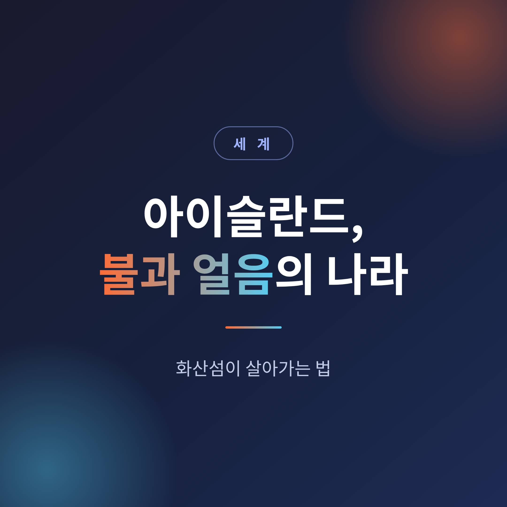
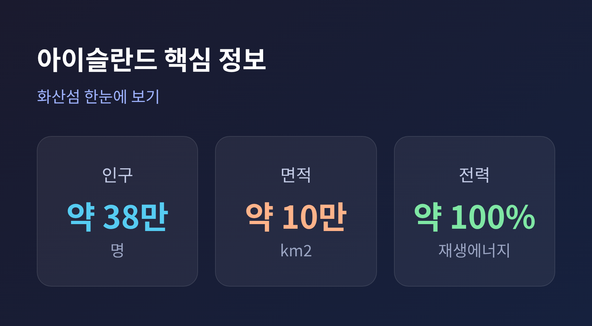
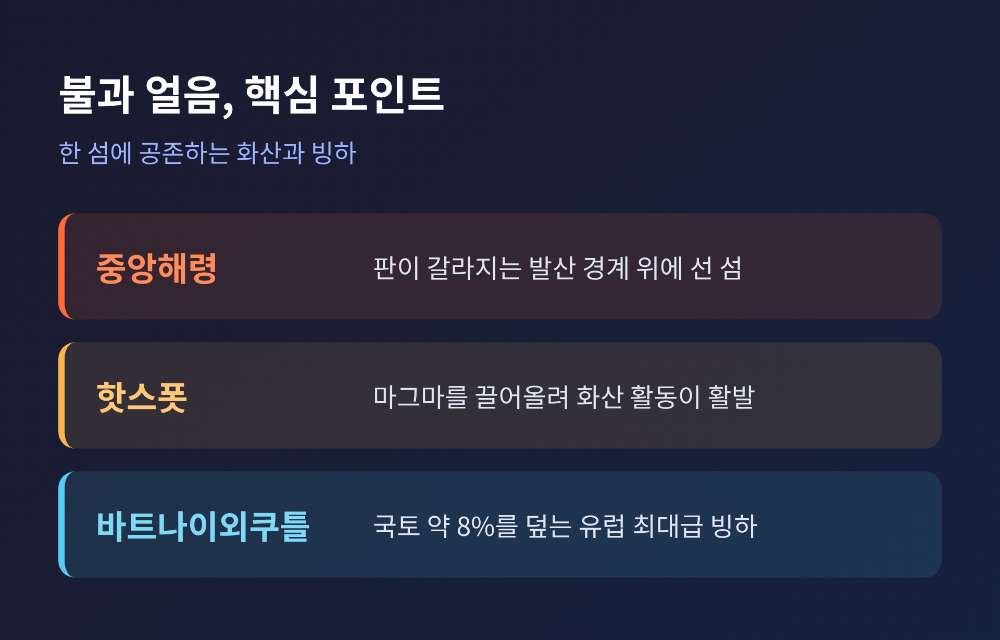
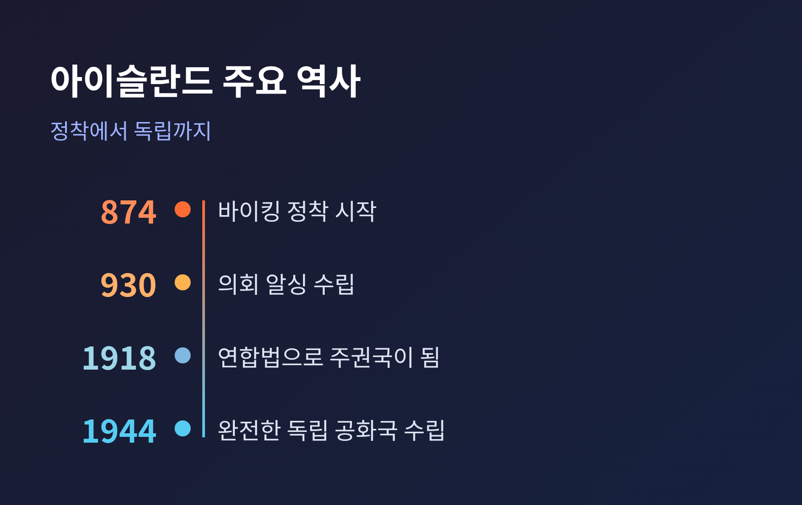

[세계] 아이슬란드, 불과 얼음의 나라 — 화산섬이 살아가는 법


이번 글에서는 아이슬란드라는 나라를 정리해 보겠습니다.
활화산과 빙하가 같은 땅에 공존하는 화산섬입니다.
그 척박한 조건을 에너지와 문화로 바꿔낸 이야기를, 지리부터 역사까지 차근히 풀어보겠습니다.
- 아이슬란드는 대서양 중앙해령 위에 놓인 화산섬으로, 불(화산)과 얼음(빙하)이 한 섬에 공존합니다.
- 전력은 사실상 100%가 재생에너지이며, 수력이 다수, 지열이 나머지를 채웁니다.
- 930년 세계 최초의 의회 알싱을 세웠고, 1944년 6월 17일 독립 공화국이 되었습니다.
■ 판이 갈라지는 땅 위에 선 섬
아이슬란드는 대서양 중앙해령 위에 자리 잡고 있습니다.
북아메리카 판과 유라시아 판이 서로 멀어지는 발산 경계입니다.
두 판은 해마다 약 2.5cm씩 벌어지고, 그만큼 대서양도 넓어집니다.
판 경계와 해령이 육지에서 보이는, 사람이 사는 유일한 섬으로 꼽힙니다.
여기에 맨틀 깊은 곳에서 마그마를 끌어올리는 핫스폿까지 겹쳐 있습니다.
화산 활동이 유독 활발한 이유입니다.
면적은 약 102,775 km²(약 103,000 km²로도 표기)로, 해령 위 육지로는 세계 최대입니다.
섬이 바다 위로 솟은 것은 약 1,600만~1,800만 년 전입니다.
지질학적으로는 매우 젊은 땅인 셈입니다.
현무암이 지질의 주를 이룹니다.
그리고 빙하가 국토의 상당 부분을 덮습니다.
최대 빙하인 바트나이외쿠틀은 국토의 약 8%를 덮으며, 유럽에서 손꼽히는 규모입니다.
■ 불과 얼음, 그리고 2010년의 화산재 대란

화산섬에 산다는 것은 재해와 함께 산다는 뜻입니다.
2010년 에이야퍄들라이외쿠틀 분화가 대표적입니다.
분화는 그해 3월 20일 시작해 6월 23일에 끝났습니다.
처음에는 용암은 나왔으나 화산재는 적었습니다.
그러나 4월 14일, 마그마가 정상 빙하를 녹이며 곱게 빻인 화산재가 고도 약 8~9km까지 치솟았습니다.
미세 화산재는 유럽 상공을 약 6일간 닫아걸었습니다.
약 1,000만 명의 승객이 발이 묶이고, 10만 편 이상의 항공편이 취소되었습니다.
최근의 분화는 성격이 다릅니다.
2021년 이후 레이캬네스 반도가 가장 활발한 화산 지대가 되었습니다.
2023년 12월 시작된 순드흐누쿠르 분화는 2025년 7월까지 아홉 차례 이어졌습니다.
다만 이쪽은 균열 분화여서 규모가 작고 화산재가 적었습니다.
항공편이나 투어에 큰 지장을 주지 않았습니다.
예전의 화산재 대란과는 결이 다른 셈입니다.
■ 화산섬이 에너지를 만드는 법
땅이 끓는다는 것은 위협이자 자원입니다.
아이슬란드 전력망의 전기는 사실상 100%가 재생에너지입니다.
정부·기관 자료는 전력원을 수력 약 70%, 지열 약 30%로 제시합니다.
다른 자료는 수력 약 80%, 지열 약 20%로 적기도 합니다.
비율은 출처마다 엇갈리지만, 거의 전량이 재생에너지라는 점은 일치합니다.
난방에서도 지열의 몫이 큽니다.
주택의 약 90%가 지열로 난방하고, 1차 에너지 공급의 약 85%를 국내 재생에너지가 차지합니다.
이 전환은 갑자기 이루어진 것이 아닙니다.
아이슬란드는 이미 1970년대에 전력 대부분을 재생에너지로 충당한 선구적 국가였습니다.
당시의 석유 위기가 전환을 앞당겼습니다.
풍부한 지열과 빙하·강우에서 오는 수자원이 만나 가능해진 일입니다.
■ 930년의 의회, 1944년의 독립

사람의 역사도 그만큼 깊습니다.
기록상 정착은 9세기 후반, 관례적으로 874년으로 봅니다.
주로 노르웨이계 바이킹과 그들이 데려온 사람들이 자리를 잡았습니다.
930년에는 싱그베들리르에서 의회 알싱을 세우고 공통 법체계를 채택했습니다.
알싱은 약 930년부터 1798년까지 이곳에서 열려, 세계에서 가장 오래된 의회 중 하나로 꼽힙니다.
매년 여름 족장들이 모여 법을 고치고 분쟁을 해결했습니다.
독립의 길은 단계적이었습니다.
| 연도 | 사건 |
|---|---|
| 874년 | 정착 시작(관례적 기준) |
| 930년 | 의회 알싱 수립 |
| 1874년 | 덴마크가 헌법 부여, 자치 허용 |
| 1918년 | 연합법으로 주권국이 됨 |
| 1944년 6월 17일 | 완전한 독립 공화국 수립 |
초대 대통령은 스베이든 비외르든손이었습니다.
■ 작은 나라가 사는 방식
인구는 통계청 기준 2024년 1월 1일 383,726명입니다.
추계로는 약 40만 명 안팎입니다.
국토는 넓지만 인구의 60% 이상이 수도 레이캬비크와 그 주변에 모여 삽니다.
전통적으로 경제의 핵심은 어업이었습니다.
협의의 어업은 GDP의 12% 이상을 차지합니다.
양식·해양기술까지 포함한 해양 클러스터로 넓게 보면 GDP의 약 25~30%에 이릅니다.
최근에는 관광이 빠르게 성장해 가장 큰 산업 중 하나가 되었습니다.
재생에너지로 가동하는 알루미늄 제련, 기술·창조 산업도 경제를 떠받칩니다.
2008년 금융위기 이후 회복해, 2019년에는 위기 이전 수준을 넘어섰습니다.
양성평등에서도 앞서 있습니다.
세계경제포럼 2025년 보고서에서 아이슬란드는 양성평등 1위로, 10년 넘게 자리를 지켰습니다.
젠더 격차의 90% 이상을 닫은 유일한 국가입니다.
제도가 뒷받침합니다.
2018년부터 직원 25명 이상 기업은 동일 임금을 입증할 법적 의무를 집니다.
부모가 각각 6개월씩 쓰는 "쓰지 않으면 사라지는" 육아휴직도 여성의 노동시장 복귀를 도왔습니다.
■ 이야기를 자국어로 남긴 사람들
문화의 뿌리에는 사가 문학이 있습니다.
13세기부터 본격화된 산문 서사로, 9~11세기 정착기의 사건을 가문과 계보 중심으로 기록했습니다.
사가는 고대 노르드어의 서부 방언인 고대 아이슬란드어로 송아지 가죽에 쓰였습니다.
라틴어가 중세 서유럽의 공용 문어였음에도, 아이슬란드인들은 이 이야기를 자국어로 남겼습니다.
언어가 비교적 안정적으로 이어진 덕분입니다.
오늘날 아이슬란드인은 고대 사가를 큰 어려움 없이 읽습니다.
학생들은 「냘의 사가」 같은 작품을 읽으며 중세사와 언어의 뿌리를 배웁니다.
예전의 이야기가 오늘의 독서 문화로 이어진 것입니다.
결국 남는 것은 하나입니다.
아이슬란드는 땅이 가하는 위협을, 에너지와 이야기로 바꿔 살아온 나라입니다.
"불과 얼음 사이에서 사는 법을 익힌 섬."
판이 갈라지는 자리에 어떻게 나라가 설 수 있느냐고 물으신다면, 아이슬란드가 그 답을 보여준다고 하겠습니다.